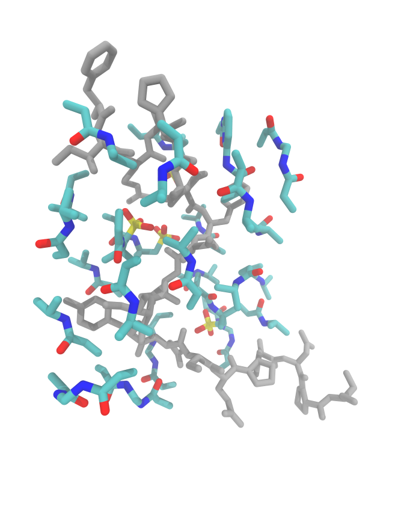
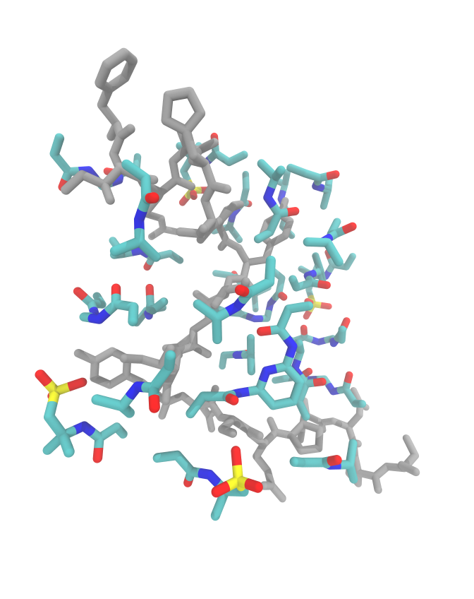
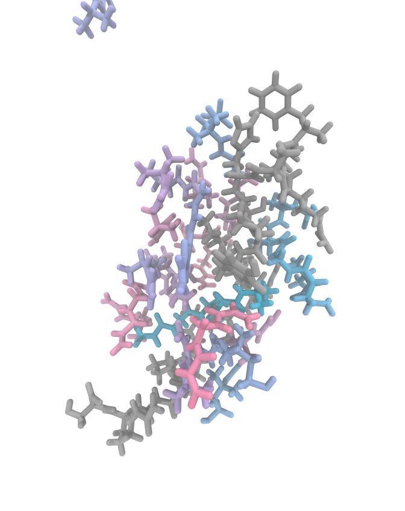
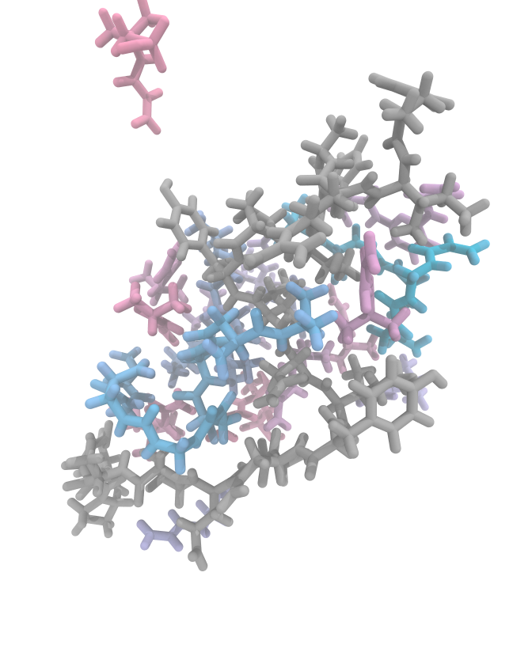

CD20 Epitope
Preparation : -dock
center:
- 146.284
- 157.686
- 146.331
energy_range:
- 4
exhaustiveness:
- 100
fms:
- AMPSA
- 4
- BAAPY
- 1
- NIPAM
- 15
- BIS
- 5
protein: CD20-epitope.pdb
scale: 1
size:
- 16
- 31
- 27
Serial
By default, functional monomers are docked in the system in the order they are given.
MIPkit -dock -protein CD20-epitope.pdb -config cd20_complex.yaml
Interval FM Mean RMSD Affinity Score
0 AMPSA 3.917 -3.188 -0.915
1 AMPSA 12.500 -3.090 -0.254
2 AMPSA 3.442 -2.695 -0.855
3 AMPSA 16.235 -2.652 -0.166
4 26-BAP 13.025 -3.680 -0.303
5 NIPAM 16.110 -2.212 -0.141
6 NIPAM 15.540 -2.230 -0.147
7 NIPAM 12.740 -2.181 -0.172
8 NIPAM 10.895 -2.240 -0.210
9 NIPAM 9.521 -2.152 -0.233
10 NIPAM 5.469 -2.285 -0.430
11 NIPAM 10.755 -2.195 -0.206
12 NIPAM 15.790 -2.348 -0.150
13 NIPAM 5.473 -2.273 -0.437
14 NIPAM 12.125 -2.219 -0.185
15 NIPAM 17.585 -2.201 -0.126
16 NIPAM 20.575 -2.127 -0.104
17 NIPAM 16.960 -2.152 -0.128
18 NIPAM 20.060 -2.144 -0.108
19 NIPAM 4.176 -2.097 -0.531
20 BIS 10.470 -2.828 -0.271
21 BIS 16.015 -2.790 -0.178
22 BIS 18.500 -2.660 -0.146
23 BIS 21.315 -2.700 -0.129
24 BIS 13.075 -2.668 -0.208
Precomplexation ━━━━━━━━━━━━━━━━━━━━━━━━━━━━━━━━━━━━━━━━ 100% 0:02:15
Shuffle
Alternatively, we can add all functional monomers in a shuffled manner using -shuffle.
MIPkit -dock -protein CD20-epitope.pdb -config cd20_complex.yaml -shuffle -shuffle_seed "xF00D"
Interval FM Mean RMSD Affinity Score
0 NIPAM 3.688 -2.596 -0.719
1 NIPAM 7.901 -2.420 -0.312
2 NIPAM 8.162 -2.432 -0.302
3 NIPAM 12.940 -2.268 -0.181
4 BIS 11.490 -2.856 -0.255
5 NIPAM 10.675 -2.333 -0.224
6 BIS 4.574 -2.830 -0.703
7 NIPAM 10.575 -2.280 -0.221
8 AMPSA 17.795 -2.638 -0.150
9 NIPAM 17.530 -2.465 -0.142
10 BIS 22.955 -2.878 -0.126
11 NIPAM 14.290 -2.358 -0.166
12 26-BAP 12.860 -3.753 -0.300
13 BIS 18.655 -2.873 -0.157
14 NIPAM 14.425 -2.122 -0.148
15 NIPAM 15.025 -2.258 -0.151
16 NIPAM 13.910 -2.184 -0.158
17 NIPAM 16.590 -2.299 -0.140
18 BIS 13.990 -2.689 -0.196
19 NIPAM 15.195 -2.237 -0.149
20 NIPAM 16.950 -2.124 -0.127
21 AMPSA 13.840 -2.426 -0.178
22 NIPAM 15.400 -2.156 -0.142
23 AMPSA 17.365 -2.506 -0.146
24 AMPSA 12.025 -2.442 -0.209
Precomplexation ━━━━━━━━━━━━━━━━━━━━━━━━━━━━━━━━━━━━━━━━ 100% 0:02:18
Serial vs Shuffle
Serial and Shuffle give different results, which will almost certainly give us different trajectories. Similarly, -shuffle by itself will do the same, with -shuffle_seed giving us the a method of controlling the randomness to some degree (at least the starting configuration).
| Serial | Shuffle |
|---|---|
 |
 |
Here we can see the side by sides of shuffle and serial. AMPSA is the most clear difference due to its location in the config file. In serial, it has docked on the surface of the epitope and is surrounded by NIPAM and cross-linkers. However, when it gets shuffled, some are docked on the outside, which lowers its chances of contributing to the MIP.
GROMACS : -react
To demonstrate the differences from starting conditions, we will run directly from the docked position rather than the equilibration -min. Since this is just a tutorial and not a full production run, we will only use 10 cycles. We will also use -gmxt short to use a 0.5 ns cycle.
Serial
MIPkit -react -protein CD20-epitope.pdb -cplx CD20-serial.pdb -cutoff 3.3 -gmxt short
=====================================================================
BMBT MIPkit
DOI:
Barrett et al.
=====================================================================
+ Reaction run.
+ GMX -short selected. This will run 0.5 ns per cycle, totalling 5.0 ns.
+ Implicit reaction with probability 1.0 and cutoff 3.3.
Complexation using 8 cores.
Accelerating with -gpu_id 0
Precomplex : CD20-serial.pdb
Template : CD20-epitope.pdb.
======================================================================
Step Nmono Npoly MW-Navg MW-Wavg MWmax MWmin
======================================================================
0 25 0 140.48 150.67 217.09 113.08
1 25 0 140.48 150.67 217.09 113.08
2 25 0 140.48 150.67 217.09 113.08
3 25 0 140.48 150.67 217.09 113.08
4 25 0 140.48 150.67 217.09 113.08
5 23 1 146.41 169.15 363.15 113.08
6 23 1 146.41 169.15 363.15 113.08
7 22 1 152.87 192.96 478.25 113.08
8 22 1 152.87 192.96 478.25 113.08
9 22 1 152.87 192.96 478.25 113.08
Complexation ━━━━━━━━━━━━━━━━━━━━━━━━━━━━━━━━━━━━━━━━ 100% 0:24:51
So we can see that polymerization only just began with our system, with only three functional monomers reacting to form a single chain. If you want to analyze the statistics over time, the same molecular weight stats will are printed to ./work/stats-polymerization.log.
Shuffle
MIPkit -react -protein CD20-epitope.pdb -cplx CD20-shuffle.pdb -cutoff 3.3 -gmxt short
=====================================================================
BMBT MIPkit
DOI:
Barrett et al.
=====================================================================
+ Reaction run.
+ GMX -short selected. This will run 0.5 ns per cycle, totalling 5.0 ns.
+ Implicit reaction with probability 1.0 and cutoff 3.3.
Complexation using 8 cores.
Accelerating with -gpu_id 0
Precomplex : CD20-shuffle.pdb
Template : CD20-epitope.pdb.
======================================================================
Step Nmono Npoly MW-Navg MW-Wavg MWmax MWmin
======================================================================
0 25 0 140.48 150.67 217.09 113.08
1 25 0 140.48 150.67 217.09 113.08
2 21 2 152.87 168.25 269.17 113.08
3 20 2 159.91 192.21 425.26 113.08
4 19 2 167.52 206.88 425.26 113.08
5 17 3 176.0 216.97 425.26 113.08
6 16 3 185.37 254.72 581.35 113.08
7 15 3 195.78 278.6 581.35 113.08
8 15 3 195.78 278.6 581.35 113.08
9 15 3 195.78 278.6 581.35 113.08
Complexation ━━━━━━━━━━━━━━━━━━━━━━━━━━━━━━━━━━━━━━━━ 100% 0:24:46
-shuffle faired a bit differently, with the chains forming and growing much faster, with a total of 10 monomers consumed by 3 chains in 10 steps. We can see who contributed to this growth by inspecting ./logs/bmbt-polymerization.log, which will contain :
Bonding NIPAM 7 and NIPAM 6 (14) as X0
Bonding BIS 0 and NIPAM 6 (17) as X1
Bonding BIS 0 and X1 9 (20) as X2
Bonding NIPAM 7 and X0 15 (23) as X3
Bonding BIS 0 and NIPAM 6 (17) as X4
Bonding X2 10 and BIS 1 (31) as X5
Bonding BIS 10 and X4 9 (20) as X6
In MIPkit, X$ will always be a polymer chain, with each reaction increasing by 1. So during the formation of one polyNIPAM chain, we see NIPAM + NIPAM > X0, then NIPAM + X0 > X3.
Serial vs Shuffle
| Serial | Shuffle |
|---|---|
 |
 |
So in looking at these stills from the last step, we can first see an AMPSA molecule wandering away from the system (in both). This happens and is one thing we discuss in the paper. The steric hinderances introduced by polymerization prevents functional monomers from leaving, increasing their contributions to interaction energy with the template molecule.
GROMACS : -interact
From here, you can rerun the system with a larger cycle count to see how the polymerization progresses, or rerun it with a minimization first to see how that impacts the polymerization behavior of the system.
MIP vs NIP Interaction Energy
Omitting the -template or -protein flag will allow us to generate a non-imprinted polymer (NIP) from the same recipe that we generate our MIPs from
Serial NIP :
MIPkit -react -cplx CD20-serial.pdb -cutoff 3.3 -gmxt short
Shuffle NIP :
MIPkit -react -cplx CD20-shuffle.pdb -cutoff 3.3 -gmxt short
When these runs are done, we can then run interactions using:
MIP complex Interaction (with excess FMs) :
MIPkit -interact -cplx CD20-MIP.pdb -protein CD20-epitope-done.pdb -id -config cd20_complex.yaml
NIP complex Interaction (with excess FMs) :
MIPkit -interact -cplx CD20-NIP.pdb -protein CD20-epitope-done.pdb -id -config cd20_complex.yaml -offset x y z
MIP Interaction (no loose FMs) :
MIPkit -react -cplx CD20-MIP.pdb -protein CD20-epitope-done.pdb -wash -id -config cd20_complex.yaml
NIP Interaction (no loose FMs) :
MIPkit -react -cplx CD20-NIP.pdb -protein CD20-epitope-done.pdb -wash -id -config cd20_complex.yaml -offset x y z
Using -id and -config allows us to decompose any polymers into the basic functional monomers to determine FM contributions as part of the MIP/NIP structure.
Potential Errors
- CUDA Assertion Error: This error is typically due to high energy configurations causing singularity and memory errors within GROMACS. This seems to happen more frequently with GNINA. If it does occur, try running a minimization with the 0.5 fs timestep and using the minimized state as the initial polymerization state.